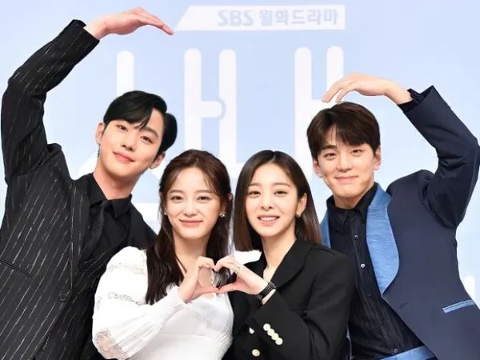

Filmes e séries de romance indicados
Pretendente Surpresa

Um pretendente surpresa é alguém que entra na vida de uma pessoa de forma inesperada, muitas vezes quebrando
a rotina ou surgindo de onde menos se espera. Ele se caracteriza por ser um admirador oculto ou alguém que
se revela em um momento inoportuno, mas encantador.
Como Perder um Homem em 10 Dias
Como Perder um Homem em 10 Dias" (2003) é uma comédia romântica clássica onde a jornalista Andie Anderson
(Kate Hudson) precisa afastar um homem em dez dias para uma matéria, enquanto o publicitário Ben Barry
(Matthew McConaughey) aposta que a fará apaixonar-se no mesmo prazo, resultando em situações cômicas e
conflitos de interesse
Sorriso Real
Sorriso Real" (King the Land) é um K-drama de comédia romântica de 2023, disponível na Netflix, focado no
romance entre Goo Won, um herdeiro rico e antissocial, e Cheon Sa-rang, uma funcionária de hotel carismática
e sorridente. A trama explora a química entre os protagonistas enquanto Won supera traumas e aprende a
valorizar sorrisos genuínos.
Opiniões sobre os filmes e séries de romance


🎬Pretendente Surpresa filme – romance/comédia
🎬Como Perder um Homem em 10 Dias filme – romance/comédia

🎬Sorriso Real série – romance/comédia
Comparação
💙 1️⃣ Sorriso Real (King the Land)
Herdeiro rico de hotel + funcionária que sempre sorri → romance de opostos.
Características
Romance mais emocional e “idealizado”
Foco em química e crescimento dos personagens.
Visual elegante, vibe de conto romântico moderno.
👉 História gira em torno do relacionamento entre um herdeiro de hotel e uma funcionária
conhecida pelo sorriso
perfeito, mostrando como eles se aproximam apesar das diferenças sociais.
💗 2️⃣ Pretendente Surpresa (Business Proposal)
Ideia central:
Mulher vai em encontro às cegas fingindo ser outra pessoa → descobre que o cara é CEO → contrato de namoro
falso.
Características
Muito humor físico e situações absurdas
Ritmo rápido
Casais secundários fortes
👉 Conta a história de uma funcionária que substitui a amiga em um encontro às cegas, mas acaba conhecendo o
próprio chefe e entra em um relacionamento falso que evolui para algo real.

💛 3️⃣ Como Perder um Homem em 10 Dias (2003)
Ideia central:
Ela quer afastar um homem para escrever matéria.
Ele quer fazer uma mulher se apaixonar por aposta.
Eles escolhem um ao outro sem saber.
👉 A trama acompanha uma jornalista que precisa fazer um homem terminar com ela em 10 dias enquanto um
publicitário aposta que consegue fazer qualquer mulher se apaixonar no mesmo período.